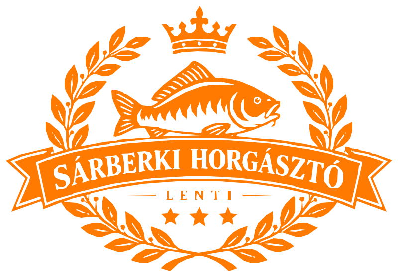

Sárberki Horgásztó
Foglalások és vendégkapcsolat egy helyen
📋
Napi kezelő
Beérkezett levelek és chates igények, válaszok, foglalás egy kattintással
💬
Chatbot
A vendég chatbotja – kipróbálás, szabad hely, foglalási igény
TESZT